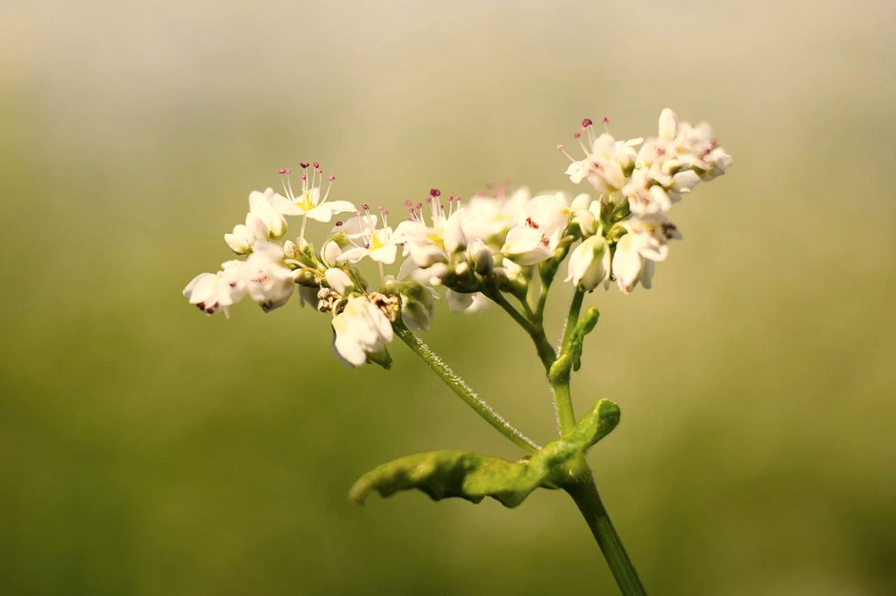

Гречиха даёт нектар только тогда, когда рядом её посеяли, поэтому этот мёд бывает не каждый год.
Тёмный, ароматный, с пряным вкусом и лёгкой горчинкой. Это мёд для тех, кто любит насыщенное.
Гречиху высевают не всегда и не всегда в зоне полёта пчёл. Если в сезон рядом её не было, гречишного мёда у нас просто не будет: пчёлы собирают то, что цветёт.
Тёмные сорта мёда обычно богаче полифенолами, а гречишный имеет яркий вкус и хорошо сочетается с сыром, орехами и тёмным хлебом. О составе мёда читайте на странице «Польза мёда».